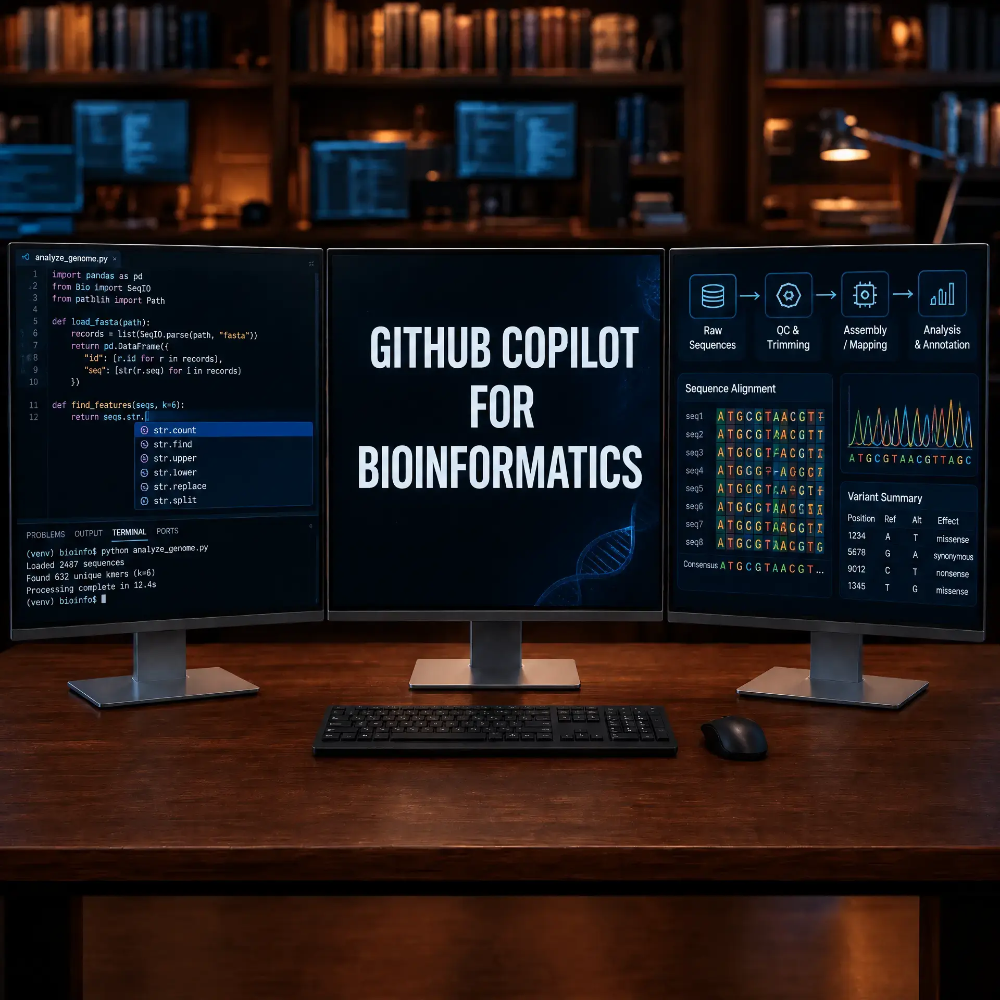

AI-Driven Research & Agentic Bioinformatics
2026-09-08
Getting Started: GitHub Student Pack & Copilot
A step by step guide to obtaining the GitHub Student Developer Pack and configuring GitHub Copilot for free to accelerate bioinformatics research and vibe coding.
Read More →